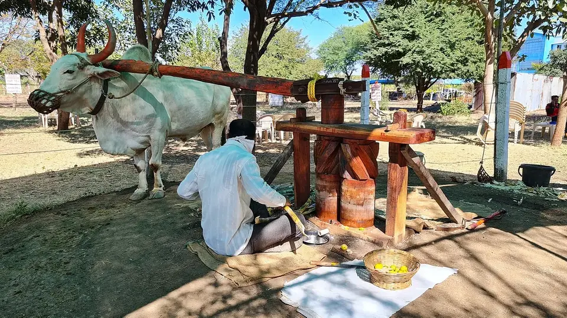

नमो शेतकरी महासन्मान निधी योजना
Namo Shetkari Mahasanman Nidhi Yojana — Maharashtra's ₹6,000 top-up over PM-KISAN
महाराष्ट्र के किसान को पीएम-किसान के ₹6,000 के ऊपर राज्य सरकार ₹6,000 और देती है — यानी साल में ₹12,000। अलग आवेदन नहीं करना पड़ता, पर e-KYC अधूरा हो तो दोनों हप्ते एक साथ रुक जाते हैं।
✍️ Kunal Rajput — KrashiMitra⏱️ 8 मिनट पढ़ें📅 अगस्त 2026

धुळे–सोलापूर मार्ग के पास का खेत — नमो शेतकरी की किस्त इन्हीं छोटे-मझोले किसानों की लागत का सहारा है।
एक ही किसान, दो सरकारें, साल में ₹12,000
💰
₹12,000
सालाना (दोनों योजनाएँ)
📅
₹2,000
हर चार महीने पर
🔑
e-KYC
हप्ता रुकने की मुख्य वजह
📖
भूमिका
महाराष्ट्र के किसान के खाते में हर चार महीने में ₹2,000 आते हैं — और उसी दिन के आसपास केंद्र सरकार की पीएम-किसान के भी ₹2,000 आते हैं। दोनों अलग-अलग योजनाएँ हैं। राज्य वाली योजना का नाम है नमो शेतकरी महासन्मान निधी योजना, और यही वह योजना है जिसकी वजह से महाराष्ट्र के किसान को साल में ₹6,000 नहीं, ₹12,000 मिलते हैं।
सबसे बड़ी गलतफहमी यही है — बहुत से किसान समझते हैं कि यह पीएम-किसान का ही दूसरा हिस्सा है, इसलिए जब एक हप्ता नहीं आता तो वे शिकायत भी सही जगह नहीं करते। सच यह है कि नमो शेतकरी का पैसा राज्य सरकार देती है, पीएम-किसान का केंद्र, और दोनों की लाभार्थी सूची एक ही आधार पर बनती है। इस लेख में — कितना पैसा, कब आता है, नाम सूची में कैसे देखें, स्टेटस कैसे चेक करें और पैसा न आए तो क्या करें — सब आसान हिंदी में।
विज्ञापन
🔍
नमो शेतकरी महासन्मान निधी योजना क्या है?
यह महाराष्ट्र राज्य सरकार की अपनी योजना है, जो सन 2023-24 से शुरू हुई। इसका पूरा नाम मराठी में “नमो शेतकरी महासन्मान निधी योजना” है। इसका मक़सद सीधा है — केंद्र की पीएम-किसान सम्मान निधि से किसान को जो ₹6,000 सालाना मिलते हैं, राज्य उसके ऊपर उतनी ही रकम और जोड़ दे।
इसका बड़ा फ़ायदा यह है कि अलग से कोई नया आवेदन नहीं भरना पड़ता। जो किसान पहले से पीएम-किसान का लाभार्थी है और महाराष्ट्र में रहता है, वह अपने आप इस योजना में आ जाता है। लाभार्थी सूची पीएम-किसान के डेटाबेस से ही उठाई जाती है।
💡
याद रखने वाली एक बात: अगर आपका पीएम-किसान का हप्ता रुक गया है, तो नमो शेतकरी का हप्ता भी अपने आप रुक जाएगा — क्योंकि दोनों की पात्रता एक ही सूची से तय होती है। इसलिए समस्या पीएम-किसान वाले सिरे से ठीक कराइए।
💰
कितना पैसा, कब और किससे — पूरा हिसाब
दोनों योजनाओं की रकम और हप्ते का ढाँचा एक जैसा है — हर चार महीने पर ₹2,000, साल में तीन बार। नीचे की तालिका दोनों का फ़र्क़ एक नज़र में दिखाती है।
बिंदु
पीएम-किसान (केंद्र)
नमो शेतकरी (महाराष्ट्र)
सालाना रकम
₹6,000
₹6,000
एक हप्ते की रकम
₹2,000
₹2,000
साल में हप्ते
3
3
पैसा कौन देता है
केंद्र सरकार
महाराष्ट्र सरकार
अलग आवेदन
हाँ — पहली बार करना पड़ता है
नहीं — पीएम-किसान की सूची से अपने आप
पोर्टल
pmkisan.gov.in
nsmny.mahait.org
यानी महाराष्ट्र के एक पात्र किसान को साल में कुल ₹12,000 मिलते हैं — हर चार महीने पर दोनों मिलाकर ₹4,000। ज़्यादातर मामलों में दोनों हप्ते आसपास के दिनों में ही खाते में आते हैं, इसीलिए बहुत से किसानों को लगता है कि यह एक ही योजना है।
⚠️
हप्ते की तारीख़ हर बार बदलती है और यह सरकार की घोषणा पर निर्भर है — किसी वेबसाइट पर लिखी “अगली तारीख़” को पक्का न मानें। रकम बदलने की घोषणाएँ भी समय-समय पर होती रहती हैं। अपने गाँव के कृषि सहायक, तलाठी या CSC केंद्र से ताज़ा स्थिति ज़रूर पूछ लें।
विज्ञापन
✅
कौन पात्र है और कौन नहीं
पात्र किसान:
महाराष्ट्र का निवासी किसान: जिसके नाम पर राज्य में खेती योग्य ज़मीन दर्ज है।
पीएम-किसान का लाभार्थी: जिसका नाम पहले से पीएम-किसान की सूची में चालू (Active) है।
e-KYC पूरा: आधार से जुड़ा मोबाइल और बैंक खाता, दोनों का सत्यापन हो चुका हो।
भूमि अभिलेख जुड़ा हुआ: 7/12 और 8-अ में नाम, और वह रिकॉर्ड पोर्टल पर लिंक हो।
अपात्र (जिन्हें नहीं मिलेगा):
आयकर देने वाले: पिछले वर्ष जिसने इनकम टैक्स भरा हो।
सरकारी कर्मचारी और पेंशनधारी: चतुर्थ श्रेणी / मल्टी-टास्किंग स्टाफ़ को छूट है; ₹10,000 से ऊपर मासिक पेंशन वालों को नहीं।
पेशेवर: प्रैक्टिस करने वाले डॉक्टर, वकील, इंजीनियर, चार्टर्ड अकाउंटेंट और उनका परिवार।
सिर्फ़ बटाईदार / खेत मज़दूर: जिसके अपने नाम पर ज़मीन नहीं है — यह योजना ज़मीन के रिकॉर्ड पर चलती है।
📱
यादी में नाम और स्टेटस कैसे देखें
इसके लिए राज्य का अपना पोर्टल है — nsmny.mahait.org। मोबाइल से भी खुल जाता है, किसी एजेंट की ज़रूरत नहीं।
पोर्टल खोलें: ब्राउज़र में nsmny.mahait.org टाइप करें।
“लाभार्थी स्थिती” चुनें: होम पेज पर लाभार्थी की स्थिति देखने का विकल्प मिलेगा।
पहचान भरें: आधार नंबर, रजिस्ट्रेशन नंबर या मोबाइल नंबर — इनमें से जो हो, वह डालें।
कैप्चा भरकर देखें: स्क्रीन पर आपके हर हप्ते की स्थिति दिखेगी — भुगतान हुआ, प्रक्रिया में है, या रुका हुआ है।
बैंक में मिलान करें: पोर्टल पर “Paid” दिखे तो पासबुक या बैंक SMS में उसी तारीख़ का ₹2,000 का क्रेडिट खोजें।
🔑
पीएम-किसान की स्थिति pmkisan.gov.in पर अलग से देखें। दोनों जगह की स्थिति मिलाकर देखने से पता चल जाता है कि गड़बड़ी राज्य के सिरे पर है या केंद्र के — और यही आगे की शिकायत का रास्ता तय करता है।
🛠️
पैसा नहीं आया — पाँच सबसे आम वजहें और उनका इलाज
वजह
कैसे पहचानें
क्या करें
e-KYC अधूरा
स्टेटस में “eKYC Pending” या “Not Done”
pmkisan.gov.in पर OTP से या CSC पर बायोमेट्रिक से पूरा कराएँ
बैंक खाता आधार से नहीं जुड़ा
भुगतान “Failed” या “Rejected”
बैंक शाखा जाकर आधार सीडिंग और NPCI मैपिंग करवाएँ
भूमि अभिलेख सत्यापन बाक़ी
“Land Seeding: No”
तलाठी कार्यालय से 7/12, 8-अ लेकर कृषि सहायक के पास जमा करें
नाम या आधार में वर्तनी का फ़र्क़
आधार और बैंक में नाम अलग-अलग
दोनों जगह एक जैसा नाम कराएँ — आधार वाली वर्तनी को मानक मानें
पात्रता ही नहीं बनती
स्टेटस में “Ineligible”
कारण देखें — आयकर, सरकारी नौकरी या ज़मीन का रिकॉर्ड न होना
इनमें से e-KYC और आधार-बैंक लिंक ही अधिकतर मामलों की जड़ हैं। ये दोनों काम मुफ़्त हैं और अपने आप हो जाते हैं — इनके लिए किसी को पैसे देने की ज़रूरत नहीं।
🚫
ये गलतियाँ कभी न करें
किसी “एजेंट” को पैसे देना — पंजीकरण, e-KYC और स्टेटस देखना, तीनों निःशुल्क हैं। CSC पर तय सरकारी शुल्क के अलावा एक रुपया न दें।
अनजान लिंक पर आधार या OTP डालना — असली पोर्टल सिर्फ़ nsmny.mahait.org और pmkisan.gov.in हैं। व्हाट्सएप पर आए “हप्ता लिस्ट” वाले लिंक अक्सर ठगी होते हैं।
बैंक खाता बदलकर पोर्टल पर अपडेट न करना — पुराना खाता बंद हो गया तो भुगतान लौट जाएगा और स्टेटस “Failed” दिखेगा।
यह मानना कि पीएम-किसान से अलग आवेदन करना है — नमो शेतकरी के लिए कोई अलग फ़ॉर्म नहीं है। जो “अलग फ़ॉर्म” का दावा करे, उससे सावधान रहें।
ज़मीन बँटवारे के बाद रिकॉर्ड अपडेट न कराना — पिता के नाम की ज़मीन बँटने के बाद अगर 7/12 पर नाम नहीं चढ़ा, तो पात्रता अटक जाती है।
मोबाइल नंबर बदलकर आधार में अपडेट न कराना — e-KYC का OTP पुराने नंबर पर जाएगा और काम अटका रहेगा।
🗓️
साल भर का ढाँचा — कब क्या देखें
अवधि
ज़रूरी काम
अप्रैल – जुलाई
पहला हप्ता — पोर्टल पर स्थिति देखें, e-KYC बाक़ी हो तो अभी पूरा करें
अगस्त – नवंबर
दूसरा हप्ता — खरीफ़ की लागत का समय, बैंक खाता चालू और आधार-लिंक होना चाहिए
दिसंबर – मार्च
तीसरा हप्ता — रबी की बुवाई के आसपास; साल भर की तीनों किस्तें मिलाकर जाँचें
ज़मीन में बदलाव होते ही
बँटवारा, बिक्री या वारिस दर्ज होने पर तुरंत 7/12 अपडेट कराएँ
बैंक खाता बदलते ही
नए खाते की आधार सीडिंग और NPCI मैपिंग तुरंत कराएँ
हप्तों की सही-सही तारीख़ें सरकार की घोषणा पर तय होती हैं, इसलिए ऊपर की तालिका को मौसमी ढाँचा मानिए, कैलेंडर की तारीख़ नहीं।
✅
निष्कर्ष
तीन बातें याद रखिए। पहली — नमो शेतकरी महाराष्ट्र सरकार की अलग योजना है, पीएम-किसान का हिस्सा नहीं; दोनों मिलकर साल में ₹12,000 बनाते हैं। दूसरी — अलग आवेदन नहीं करना, पात्रता पीएम-किसान की सूची से ही तय होती है। तीसरी — पैसा रुकने की सबसे बड़ी वजह e-KYC और आधार-बैंक लिंक है, और वह आप ख़ुद मुफ़्त में ठीक कर सकते हैं।
यह सम्मान निधि है, कर्ज़ नहीं — इसे पाने के लिए किसी को एक रुपया देने की ज़रूरत नहीं।
⚠️
सरकारी योजनाओं के नियम, रकम और तारीख़ें समय-समय पर बदलती रहती हैं। अंतिम जानकारी हमेशा nsmny.mahait.org, अपने कृषि सहायक / तलाठी कार्यालय या बैंक शाखा से ही पक्की करें। कृषि मित्र न तो कोई एजेंट है, न किसी योजना का आवेदन करवाता है — हम सिर्फ़ जानकारी सरल भाषा में पहुँचाते हैं।
विज्ञापन
❓
अक्सर पूछे जाने वाले सवाल
1नमो शेतकरी योजना में कितने पैसे मिलते हैं?
इस योजना में महाराष्ट्र के पात्र किसान को साल में ₹6,000 मिलते हैं — हर चार महीने पर ₹2,000 के तीन हप्तों में। यह रकम केंद्र की पीएम-किसान के ₹6,000 के ऊपर मिलती है, इसलिए महाराष्ट्र के किसान को कुल ₹12,000 सालाना मिलते हैं।
2नमो शेतकरी और पीएम किसान में क्या फर्क है?
पीएम-किसान केंद्र सरकार की योजना है और नमो शेतकरी महाराष्ट्र राज्य सरकार की। रकम और हप्तों का ढाँचा दोनों में एक जैसा है (₹2,000 × 3 = ₹6,000), लेकिन पैसा दो अलग सरकारों से आता है और स्टेटस दो अलग पोर्टल पर दिखता है — pmkisan.gov.in और nsmny.mahait.org।
3नमो शेतकरी योजना के लिए अलग से आवेदन करना पड़ता है क्या?
नहीं, अलग से कोई आवेदन नहीं करना पड़ता। जो किसान पहले से पीएम-किसान का सक्रिय लाभार्थी है और महाराष्ट्र में उसके नाम पर खेती की ज़मीन दर्ज है, वह अपने आप इस योजना में शामिल हो जाता है। लाभार्थी सूची पीएम-किसान के डेटाबेस से ही ली जाती है।
4नमो शेतकरी का हप्ता कब आता है?
साल में तीन हप्ते आते हैं — मोटे तौर पर अप्रैल–जुलाई, अगस्त–नवंबर और दिसंबर–मार्च की अवधियों में, हर बार ₹2,000। सही तारीख़ हर बार सरकार की घोषणा पर तय होती है, इसलिए किसी वेबसाइट पर लिखी अनुमानित तारीख़ पर भरोसा न करें — स्थिति nsmny.mahait.org पर देखें।
5नमो शेतकरी की यादी में अपना नाम कैसे चेक करें?
nsmny.mahait.org खोलिए, “लाभार्थी स्थिती” वाला विकल्प चुनिए, और अपना आधार नंबर, रजिस्ट्रेशन नंबर या मोबाइल नंबर डालकर कैप्चा भरिए। स्क्रीन पर हर हप्ते की स्थिति दिख जाएगी — भुगतान हुआ, प्रक्रिया में है या रुका हुआ है।
6नमो शेतकरी का पैसा नहीं आया तो क्या करें?
सबसे पहले e-KYC और आधार-बैंक लिंक जाँचिए — रुके हुए हप्तों की यही दो सबसे आम वजहें हैं। e-KYC pmkisan.gov.in पर OTP से या CSC पर बायोमेट्रिक से मुफ़्त हो जाता है; आधार सीडिंग बैंक शाखा में। इसके बाद भी न आए तो कृषि सहायक या तलाठी कार्यालय में लिखित शिकायत दें।
7क्या बटाईदार किसान को नमो शेतकरी योजना का लाभ मिलता है?
नहीं। यह योजना ज़मीन के रिकॉर्ड पर चलती है — लाभ उसी को मिलता है जिसके अपने नाम पर 7/12 में खेती योग्य ज़मीन दर्ज है। सिर्फ़ बटाई पर खेती करने वाले या खेत मज़दूर इसमें पात्र नहीं होते।
8पीएम किसान का हप्ता रुका है तो क्या नमो शेतकरी भी रुक जाएगा?
हाँ, आमतौर पर रुक जाता है, क्योंकि दोनों की पात्रता एक ही सूची और एक ही सत्यापन (e-KYC, आधार सीडिंग, भूमि अभिलेख) से तय होती है। इसीलिए समस्या पीएम-किसान वाले सिरे से ठीक कराना चाहिए — वह ठीक होते ही दोनों हप्ते फिर से चालू हो जाते हैं।
🌾
KrashiMitra.in — आपका विश्वसनीय कृषि साथी
मंडी भाव, सरकारी योजनाएं, बीज-खाद की जानकारी और फसल रोग उपचार — सब कुछ हिंदी में।